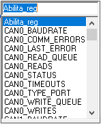

To insert the necessary variables drag the Insert Var Read icon in the zone 2 window.
To link quickly the desired variable select the object and press F4 or Select Variable from right mouse key.

It is possible to write the first letter of the desired variable to obtain a search filter.
Alternatively double click on the variable placed in the window and change its name with the name of the variable to link to (for example a “Crosstable.gvl” variable) or select a just inserted variable, select Insert Programming Unit icon and double click on variable to link to.